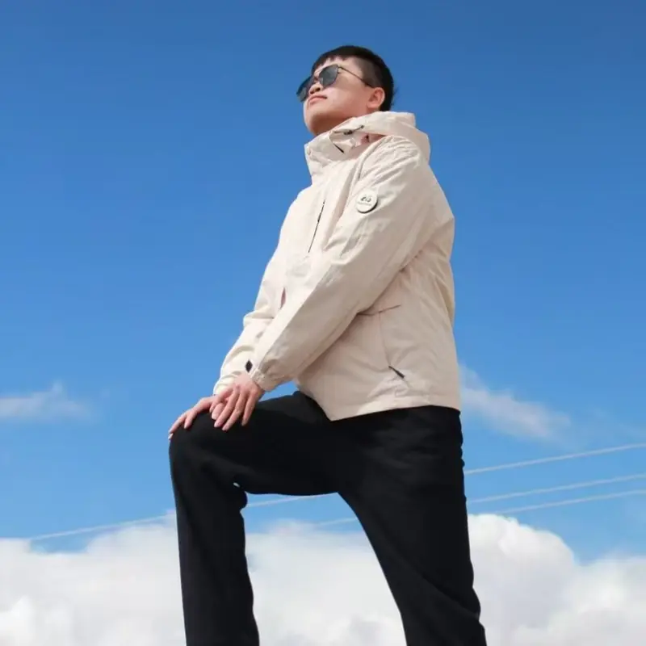

Tingxuan Huang
Algorithm Engineer · 3D Vision
I work on stereo and laser-based 3D reconstruction, geometric vision, and efficient vision systems. My research interests lie in connecting reliable geometric observations with learned 3D representations and generative methods.
3D Reconstruction · Geometric Vision · Generative 3D